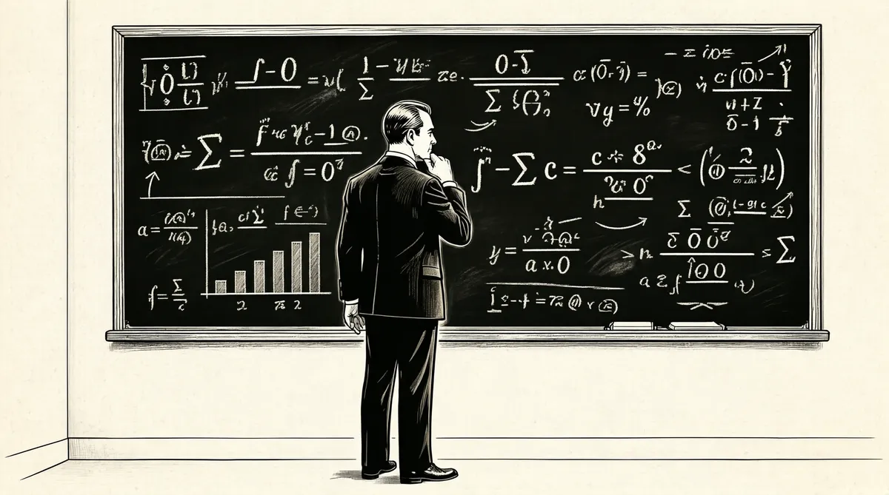

第21章 真正的玩家

豪伊是个“很难缠”的宝宝，和苏茜的安静温和相反，豪伊就像个你根本关不上的闹钟。巴菲特夫妇一直等待这噪声能够变小，可它却越来越大了。突然之间，房子里整日充斥着嘈杂声。
他有吮吸方面的问题。我们试过了各种各样的奶瓶。我不知道他是否吸进了空气，他总是处于饥饿状态。和苏茜相比，豪伊是个考验。
总是苏珊去照顾吵个不停的豪伊，因为沃伦是在一个高谈阔论的父亲、一个愤怒和喋喋不休的母亲身边长大的，所以他对周边的事情充耳不闻也许不足为奇。即使豪伊晚上哭啼不已也不会太分散他的注意力，在这间公寓的第三个卧室——他的小办公室里，沃伦可以几个小时完全沉浸在思考中。
他正全神贯注于工作中一个复杂的新项目，那将成为他职业生涯的一个重要事件。沃伦加入格雷厄姆–纽曼不久，可可的价格突然从每磅5美分飙升至超过50美分。这个情况导致布鲁克林区的巧克力制造商洛克伍德公司因“获利有限”1而面临进退两难的困境。该公司的王牌产品是洛克伍德巧克力片，被用来做巧克力薄片曲奇饼干。由于公司不能在产品上提太多价，因此损失惨重。可可豆的价格很高，洛克伍德有机会将它拥有的可可豆转卖获得暴利。不幸的是，税单会吞掉大部分的利润。2
洛克伍德公司把格雷厄姆–纽曼当作可能的买主进行接洽，不过格雷厄姆–纽曼不愿意接受洛克伍德的要价。于是洛克伍德转而投向投资人杰伊·普里茨克，后者找到了躲避巨额税单的办法。3普里茨克认识到，1954年的美国税收法规定，如果公司缩减生意的范围，那么这部分库存的“部分清算”就不需要纳税。于是他买进了足够控制洛克伍德公司的股票，同时选择让公司继续保持巧克力制造商的身份，而甩掉了可可油生意。他把1300万磅的可可豆归入可可油生意，这样，这部分可可豆就可以“被清算”了。
普里茨克并不是想用可可豆换现金，而是想用可可豆换其他股东手中的股票，他这么做是因为他想增加自己在这个公司的权益。于是他提供了一个好价钱以刺激成交——用价值36美元的可可豆4换取成交价为34美元的股票。5
格雷厄姆从中找到了挣钱的办法，格雷厄姆–纽曼可以购买洛克伍德的股票用来换取普里茨克手中的可可豆，然后卖掉可可豆，这样每股就可以挣2美元。这是一种套利交易，两种几乎一样的商品以不同的价格交易，精明的交易人可以同时一边买进一种商品，而另一边卖出另外一种商品，几乎没有风险地获取差价收益。“华尔街古老的谚语被重述了，”就像巴菲特后来写的，“给一个人一条鱼，你可以让他一天不饿，教会一个人套利生意，你可以让他永远不挨饿。”6普里茨克交给格雷厄姆–纽曼一张仓库凭单，就像听起来的那样：一张用来证明持有人拥有如此之多的可可豆的纸片。它可以用于交易，只要把仓库凭单卖出去，格雷厄姆–纽曼公司就挣钱了。
34美元（格雷厄姆–纽曼购买洛克伍德公司股票的成本——要交给普里茨克的）
36美元（普里茨克交给格雷厄姆–纽曼一张仓库凭单——以该价格出售）
2美元（洛克伍德公司每股股票的收益）
但是，这其中仍然存在一些风险。如果可可豆的价格掉下来，或者凭单突然只值30美元，会怎么样？那就意味着格雷厄姆–纽曼每股会损失4美元。为了锁定利润、消除风险，格雷厄姆–纽曼卖出了可可期货。这也是一件好事情，因为可可豆的价格快掉下来了。
期货市场中，买卖双方可以协商约定，在未来的某一天以现在双方确定的价格交换如可可豆、黄金、香蕉等商品。格雷厄姆–纽曼缴纳了小额费用后，就可以安排在一个规定的时间以已知的价格出售可可豆，这样可以消除市场价格下跌的风险。而这笔交易的对手方承担了价格下跌的风险，这是在投机。7如果可可豆价格下跌，而投机者必须得按合约中商定的价格从格雷厄姆–纽曼那儿购买现在并不值那么多钱的可可豆，这样格雷厄姆–纽曼的利益受到了保护。8从格雷厄姆–纽曼的角度来说，投机者需要承担价格下跌的风险。当然，在那时，谁都还不知道可可的价格会向哪个方向发展。
因此，套利交易的目标就是在尽可能买入洛克伍德公司股票的同时，卖出同等数额的期货。
格雷厄姆–纽曼公司安排沃伦负责洛克伍德这笔交易。沃伦是最理想的人选；他从事股票套利已经好几年，会在购买同一家公司发行的可转换优先股的同时，卖空普通股。9他详细研究了前30年的套利回报，发现这些“无风险”的交易一般会有20美分对1美元的回报，比股票平均7~8美分的回报要高得多。有好几个星期，沃伦白天坐着地铁在布鲁克林和公司间来来回回，忙着到施罗德信托公司把股票换成仓库凭单；晚上则忙于分析形势，一边为苏茜唱着《飞越彩虹》，一边沉入思考，对苏珊努力给豪伊喂奶时豪伊发出的尖叫声充耳不闻。
表面上，洛克伍德这笔交易对格雷厄姆–纽曼公司而言是笔很简单的交易，唯一的成本就是地铁票、思考和时间。不过，沃伦意识到这笔交易有更多的“金融烟花”潜力。10和本杰明·格雷厄姆不一样，他没有做套利交易，因此也不需要卖出可可期货。相反，他自己购买了222股洛克伍德的股票，并且只是简单地持有。
沃伦已经认真彻底地思考过普里茨克的报价。如果他按照洛克伍德股票数量来划分洛克伍德所拥有的可可豆——而不是分配给可可油生意的那部分豆子，就比普里茨克报出的每股80磅可可豆的价格还要高。因此那些没有交出股票的人会发现自己手中的股票每一股可以值更多的可可豆，还不只这个，那些没有交出股票的人所导致的多余的可可豆，会将每股股票所值的可可豆数量推得更高。
此外，那些保留股票的人会因手中的股份，而从公司厂房、设备、客户应收款以及洛克伍德其他没有关闭的业务中按照股票数量分得一杯羹。
沃伦进行了换位思考，从普里茨克的观点来分析，他觉得疑惑，如果杰伊·普里茨克正在买入股票，那别人卖出这些股票有什么意义？用心盘算过以后，他认为那样做毫无意义。杰伊·普里茨克这一边才是真正的玩家，沃伦现在把这些股票看作整个生意的冰山一角。
随着发行在外的股票越来越少，他持有的头寸就越来越值钱。现在，他比仅仅做套利交易要冒更大的风险，但是他下的赌注是经过计算的，而且有对他非常有利的胜算概率。通过套利获得的2美元利润太容易赚取了，而且没有风险。如果可可豆价格下跌，期货合约还可以保护格雷厄姆–纽曼公司。他们，以及很多其他股东，接受了普里茨克的要约收购，得到了一大堆可可豆。
然而，紧紧抓住股票被证实是一次聪明的选择。那些和格雷厄姆–纽曼一样做套利的人每股赚取了2美元。而洛克伍德股票从普里茨克收购之前的15美元交易价，一跃而至收购完成后的每股85美元。如果参加套利交易，沃伦的222股洛克伍德股票只能为他赚444美元，而现在，他经过计算的下注为他赢了一大笔钱——大约13000美元。11
在这个过程中，他也非常重视去了解杰伊·普里茨克。他意识到任何一个聪明人都会估计到这笔交易的后面还有更多的“聪明事”发生。他参加了股东大会，问了些问题，对普里茨克而言，那就是沃伦给他的初次印象。12那时，沃伦25岁，普里茨克32岁。
即使只能运作相对小数额的资产——少于10万美元——沃伦也认识到通过这种思考方式，他可以为自己开启有无限可能的世界。唯一束缚他的是可供他使用的资金、精力以及时间。这是个伐木工似的体力活儿，可是他喜欢这么干。这和大多数人投资的方式截然不同，大多数人坐在办公室里阅读别人的研究报告。沃伦是个侦探，很自然地要作自己的研究，就像他以前那样。
他使用穆迪工业、银行、金融，以及公共设施手册进行他的侦探工作，经常亲自去穆迪公司或者标准普尔公司。
我是唯一一个会在那儿出现的人，他们甚至从来不问我是不是客户。在那里，我可以找到四五十年前的文件，他们没有复印机，所以我得坐在那儿潦草地记下所有小的注释，这个数字那个数字。他们有一个图书馆，可是你不能自己挑选，你必须请里面的人帮忙。于是我就说那些公司的名字——泽西抵押公司、银行家商业公司，以前从来没有人这么要求过。他们把相关内容找出来，我就坐在那儿记笔记。如果你想看看证券交易委员会里的文件，那你就应该像我经常做的那样，直接去证券交易委员会。这是可以得到那些文件的唯一办法。如果公司就在附近，也许我会顺便看看公司的管理。我不会事先预约，不过我能完成好多事情。
他最喜欢的线索之一是粉单：一周印一次，在一张粉红色的纸上。这张单子提供了那些小得不能在股票交易所交易的公司的信息。另外一个是《全美报价书》，每6个月出版一次，上面是一些小得都不能进粉单的公司信息。但是再小的公司、再难懂的细节都难以逃脱他的筛子。“我会仔细筛选大量的企业，并且从中找出一两个我能投上1万或者1.5万美元的极其便宜的公司。”
沃伦并不骄傲，他为能从格雷厄姆、普里茨克或者其他有用的来源借用思想而感到荣幸。他称之为“搭顺风车”，而并不介意这个主意是吸引人的还是平凡的。一次，他跟从了格雷厄姆的投资，买了联合电车公司的股票13。这是一家位于马萨诸塞州新贝德福德的公共汽车公司，相对它的净资产，它的股票价格有很大的折扣。
它有116辆公共汽车和一个小型游乐场。我开始买这只股票的时候，是因为它有80万美元的国库券、数十万美元的现金以及价值9.6万美元的发行在外的公共汽车票。就算它值100万美元，每股应该值60美元。而我开始买的时候，股票交易价格在30~35美元左右。
整个公司正在以它银行现金的一半价值出售股票。买这只股票相当于在玩儿老虎机，你投进50美分，而它能保证最后吐出来1美元。在这种情况下，这家公司很自然也在设法买自己的股票，在当地的新贝德福德报纸上登广告邀请其他股东将股票卖给他们。面临竞争的沃伦也刊登了自己的广告：“如果你想出售自己的股票，请按照某某地址写信给沃伦·巴菲特。”“因为这是受管制的公用事业，我从马萨诸塞州公用事业委员会弄到了最大股东的名单。我努力去找更多的股票，而且，我想去见见掌管这家公司的马克·达夫。”
拜访管理层是沃伦做生意的一种方式，他利用这些会面尽可能地去了解公司。和管理层的私人接触中，他会用自己的知识和智慧迷住那些有影响力的人，给他们留下深刻印象。而且，他感觉通过和公司的管理层变得友好，他也许能够影响这家公司去做正确的事情。
相反，格雷厄姆不会去拜访管理层，更不用说设法影响他们了。他把这种行为称为“自助”，并且认为这是用“欺骗”去获得内幕消息，即使那是合法的。他觉得投资者从定义上来看就意味着是一个外部人，他和管理层应该是公开询问，而不是和他们有往来。格雷厄姆希望和对手，即使是个小家伙，在平等的竞技场上比赛，使用任何人都能获得的少量信息。14
然而，沃伦凭着他的直觉，决定在一个周末去拜访联合电车公司。
我大约早上4点起床，然后开车去新贝德福德，马克·达夫很友善、礼貌。就在我准备离开的时候，他说：“顺便提一下，我们一直在考虑给股东们一次资本回报分配。”那意味着他们将把多余的钱回馈股东，于是，我说：“哦，那很好啊。”他又接着说：“是的，不过你可能没有意识到马萨诸塞州关于公用事业的法令中有一条规定，如果你想这么干，必须得按照面值的倍数来支付。”这只股票的面值为25美元，那意味着公司至少要分配一股25美元。我回答，“好啊，那是一个好的开端。”接着他又说：“我们考虑用两倍。”那意味着他们将宣布一股50美元的分红，而它现价才只有35~40美元。也就是说如果你买了一股他们的股票，你立刻就能除了拿回付出的钱外，还有多的。另外，你仍然拥有你手中的股票代表的这家企业的一小部分。
我一股得了50美元，而且我还拥有这些股票，这家公司还有价值。联合电车公司在所谓的特别储备、土地、建筑以及他们放旧电车的仓库里还隐藏了资产。我永远也不会知道是不是我的拜访促成了这次分红。
到目前为止，对冲突很小心谨慎的巴菲特已经磨炼出不需要大声嚷嚷就能解决问题的技能。因此，虽然他认为也许他影响了达夫，但并不肯定是什么推动了达夫的决策。对他而言，重要的是他不需要冲突就能得到他想要的结果——他在这笔交易中挣了2万美元。谁会知道能从联合电车公司挣这么多钱呢？15
巴菲特家族的历史上还没有人能够一笔挣2万美元。1955年，这笔钱是一般人平均年收入的好几倍。几周的工作就能将你的钱翻一倍多是惊人的，但是，对沃伦来说更重要的是，这样做几乎没冒什么大风险。
苏珊和沃伦并没有讨论可可豆套利和电车公司股票的细节。她对钱不感兴趣，只把它看成是用来买东西的。而且她知道，即使钱像大浪一样冲进怀特普莱恩斯的小公寓里，沃伦给她的也就是那一点点家用。她不是以记录每一笔微小开支的方式长大的，所以和一个为了省钱而和报摊商量买过期一周的杂志的男人结婚，对她而言意味着全新的生活方式。她竭尽全力一个人打理家里，不过沃伦挣的钱和他给妻子的钱之间的差距已经大得让人目瞪口呆。一天，她很恐慌地打电话给邻居玛德琳·奥沙利文。
“玛德琳，发生了一件糟糕的事情，”她说，“你得过来一趟！”玛德琳冲到巴菲特家，苏珊正在那儿心烦意乱呢。原来她无意中将沃伦桌子上的一批红利支票扔进了公寓的炉子槽里，那直接连着这个公寓的炉子。16
“也许炉子没有烧火。”玛德琳说，于是她们打电话给大楼管理人，管理人让她们进了地下室。确实，炉子是冷的。她们在垃圾里翻找支票，苏珊一直绞着自己的手说：“我无法面对沃伦。”当她们最终找到支票时，玛德琳的眼睛都睁圆了，并不是她认为的只有25美元或者10美元，这笔钱足足有数千美元之多。17住在怀特普莱恩斯小小寓所里的巴菲特夫妇变得真正富有了。
伴随着豪伊的哭闹声，他们的钱越来越多。沃伦也对苏珊稍稍慷慨了一些，尽管他自己很节约，但由于他完全被苏珊迷住了，所以还是一一满足了她的要求。那一年的6月，他们回奥马哈参加沃伦妹妹伯蒂和查理·斯诺福的婚礼。那时，沃伦已经答应苏珊找个人帮忙做家务。于是他们急忙开始在奥马哈寻找一个可以和他们一起回怀特普莱恩斯的家政工。
通过在报纸上登广告，他们雇用了小镇上的一个年轻妇女，她“看起来是合适的类型”——事实上不是。后来沃伦打发她坐公共汽车返回奥马哈，而苏珊重新寻找替代人选，因为她需要帮手——抚养豪伊两个人都忙不过来，而且她知道他们负担得起。
沃伦在格雷厄姆–纽曼的耀眼表现让他成了公司的明星员工，本杰明·格雷厄姆私下对沃伦以及他亲切外向、让人平静的妻子很感兴趣。格雷厄姆在豪伊出生时送给他们一个电影摄影机和放映机作为孩子的礼物，他甚至为了这个小男孩，带着泰迪熊出现在他们的公寓里。18有一两次，他和他的妻子埃斯蒂邀请巴菲特夫妇吃晚饭，席间，他注意到沃伦经常凝视着他的妻子，而且两个人总是手牵着手。但是他也看出来沃伦并没有刻意对他的妻子献殷勤，而苏珊也许会喜欢偶尔的浪漫举动。19当苏珊带着期望提到沃伦不会跳舞时，格雷厄姆就把亚瑟·默里舞蹈工作室的礼券随意放到沃伦的桌上。他本人也在那儿上课，虽然跳得很笨拙。不久格雷厄姆向工作室核实，才发现他的门徒从没使用过礼券。他和沃伦提起这件事情，并且鼓励他去，掉进陷阱的沃伦和苏珊步履蹒跚地上了三次课以后，就退出了。他从来没有学会跳舞。20
但是这些并没有妨碍沃伦在格雷厄姆–纽曼的地位上升，还不到18个月，本杰明·格雷厄姆和杰里·纽曼都开始把沃伦当作一个潜在的合伙人对待，那意味着会有一些家庭聚会。1955年年中，甚至坏脾气的杰里·纽曼也邀请了巴菲特夫妇到他位于纽约路易斯伯洛的豪宅参加夫妇俩认为的“野餐”，苏珊穿着适合坐大篷车的轻便衣服出席，到了那里才发现其他女士们都穿着裙子，戴着珍珠项链。尽管他们看着就像是一对乡巴佬，可穿着上的失礼并没有对沃伦的地位造成影响。
沃尔特·施洛斯没有被邀请参加这样的场合，他已经被归为熟练雇员一类，永远不可能升为合伙人。一向对人不那么友好的杰里·纽曼更加怠慢轻视施洛斯，于是，已婚且育有两个年幼孩子的施洛斯决定自己干。他过了好一段时间，才鼓足勇气告知格雷厄姆21。1955年年底，他自己的投资合伙公司正式开张，10万美元的出资额由一群合伙人共同承担，就像巴菲特后来评论的，这些人名“就是直接从埃利斯岛的一长串名单中得来的”。22
巴菲特肯定，施洛斯能够成功地运用格雷厄姆的方法。他钦佩施洛斯能有这样的勇气去建立自己的公司。虽然他担心施洛斯用这么少的资本起步是否能养活自己的家庭23，但是他也没有对施洛斯的合伙公司投入过一毛钱，就和没有投资格雷厄姆–纽曼公司一样。对沃伦·巴菲特而言，让别人用他的钱投资是不可想象的事情。
他找到了接替施洛斯的人，巴菲特是在华尔街布莱斯公司的正式午宴上遇到汤姆·纳普的24，他比沃伦大10岁，高大英俊、黑发，具有坏坏的幽默感。纳普上过一堂戴维·多德的夜校课，并且被迷住了，于是他立刻把他的研究行业从化学换成了商业。格雷厄姆雇用了纳普，他是这家公司的第二个非犹太人。
等到纳普开始坐在巴菲特旁边原来施洛斯的那张旧桌子旁时，沃伦已经开始注意到格雷厄姆的私人生活。当格雷厄姆邀请纳普去听他在新学校发表的有关社会研究的演讲时，纳普觉得自己开始入门了。他说，在那儿他发现自己是和6位女士一起坐在桌子旁边。“本杰明说话的时候，”纳普说，“我意识到每一位女士都很爱他，而且她们看起来并不相互妒忌，她们似乎都非常非常了解他。”25
事实上，到1956年年初，格雷厄姆已经对投资感到厌烦了，他的其他兴趣——女人、经典著作、艺术——如此强有力地拉着他，他的一只脚已经走到了门外。一天，纳普出去时，接待员将一个身材瘦高的年轻男子引入沃伦正在填表格的那间没有窗户的房间。他叫埃德·安德森，和纳普一样，是个化学家，不是专业的投资者。他在加利福尼亚原子能委员会的利弗莫尔实验室工作，业余时间看看股票。他读过《聪明的投资者》，里面丰富的便宜股票让他印象深刻。我的天啊！他想，这不可能是真的。你怎么能用比他们放在银行的现金还少的钱买这些公司呢？26
兴趣被激发后，他一直在搭格雷厄姆的顺风车。买了一股格雷厄姆–纽曼公司的股份后，他利用格雷厄姆–纽曼的季报弄清楚格雷厄姆在干什么，就跟着买那些股票。格雷厄姆从不阻止这种行为，他喜欢别人学习并且效法他。
安德森来公司是因为他在考虑再买一股格雷厄姆–纽曼的股份，不过他注意到了一个奇怪的地方，所以想问问清楚。格雷厄姆买了太多AT&T（美国电话电报公司）的股票，这是可想象的最不像格雷厄姆风格的股票——拥有、研究，被众人追随，公平估价，潜力和风险一样小。发生什么事情了吗？他问沃伦。
沃伦思考了一秒钟，这个没有商业背景的男子令人印象深刻，一个化学家，却意识到AT&T股票不在格雷厄姆固有的投资模式之内。而太多人认为“生意”是类似经过专门培训的人才能做的工作。他对安德森说，“也许现在不是再买一股的最佳时机。”27他们又聊了一会儿，然后友好地告别，都表示以后要保持联系。沃伦很高兴他的朋友施洛斯已经自立门户了。通过观察公司的交易模式，他已经清楚格雷厄姆将关闭他的合伙公司了。
本杰明·格雷厄姆的职业生涯即将走到终点。他62岁，而市场已经超越了1929年的高峰。28现在的价格让他感到紧张，而他的回报率已经比市场高出2.5%。29他想退休，搬到加利福尼亚去享受生活。杰里·纽曼也要退休，不过他的儿子米基将继续留任。1956年春天，格雷厄姆给他的合伙人发了通知，不过他首先提供给沃伦成为公司普通合伙人的机会。他能够选择像沃伦这样年轻的人，显示了在这么短的时间里，沃伦已经让自己变得多么有价值。但是“如果我继续待在那儿，我只能成为类似本杰明·格雷厄姆的人，并且米基也只能成为类似杰里·纽曼的人，但是米基早就已经是高级合伙人了。这家公司的名字将会是纽曼–巴菲特”。
即使沃伦受到了赞赏，他也已经去格雷厄姆–纽曼公司工作过了，然而对他而言，留下来，甚至被看成是本杰明·格雷厄姆智慧的继承人已经不值得了。而且，当他主导联合电车和可可豆一战时，他总在想，“我不喜欢住在纽约，因为我总是在火车上来来回回。”更重要的是，他不适合和合伙人共同工作——尤其是作为某个人的下一级合伙人。于是，他拒绝了邀请。
[1]金融烟花，financialfirework，在金融领域，指金融产品（股票、债券等）的价格迅速爬升。——编者注